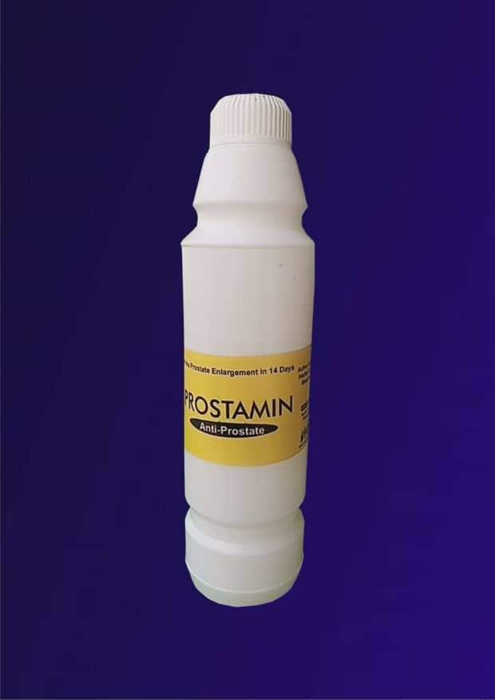

PROSTAMIN
14-DAY Herbal cure for Prostate Enlargement .
Who told you that Prostate Enlargement has no medical cure, except surgery. The truth of the matter is that , there is a cure for every ailment in nature. Besides, "with God all things are possible." Mathew 19/26.
OVERVIEW
In every man, from 25 years, the prostate accumulates toxins due to urine and semen which pass through the urethra.
The prostate also participates in the composition of sperm by adding a secretion that is not entirely eliminated from this gland. When the residual secretions stay there, it participates in its progressive intoxication. This will lead to inflammation, swelling of the gland and its inability to play its role, thus affecting sex life (sexual weakness, premature ejaculation, etc.).
To keep this gland in good condition until your old age, it is important to detoxify it periodically with medication, orthodox or organic.
Conventional medicine does not yet offer us anything concrete and reliable to protect our prostate from premature old age.
But among the panoply of solutions offered by herbal medicine, PROSTAMIN is the only drug that hits prostate enlargement head on and shrinks it to its default size within 14 days.
PROSTAMIN is tested and trusted by many Bph patients in Nigeria and beyond.
Now, you too can TEST it and TESTIFY too.
It's the latest and the most effective cure against Prostate Enlargement for now.
PROSTAMIN is purely made from herbal Extracts, no chemicals, no artificial.